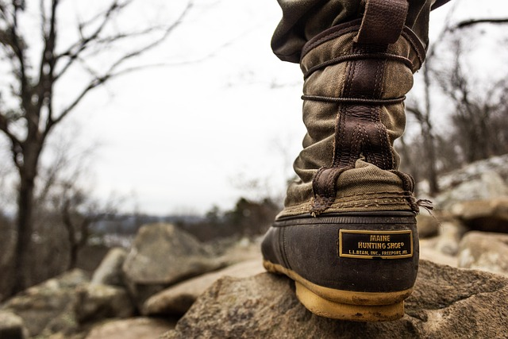
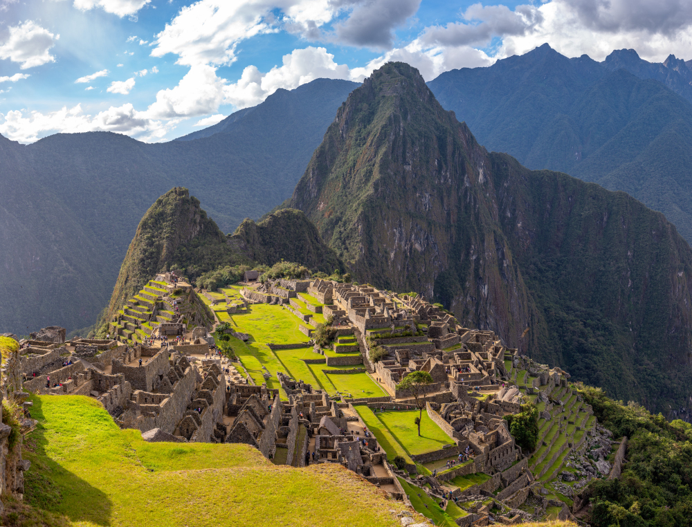
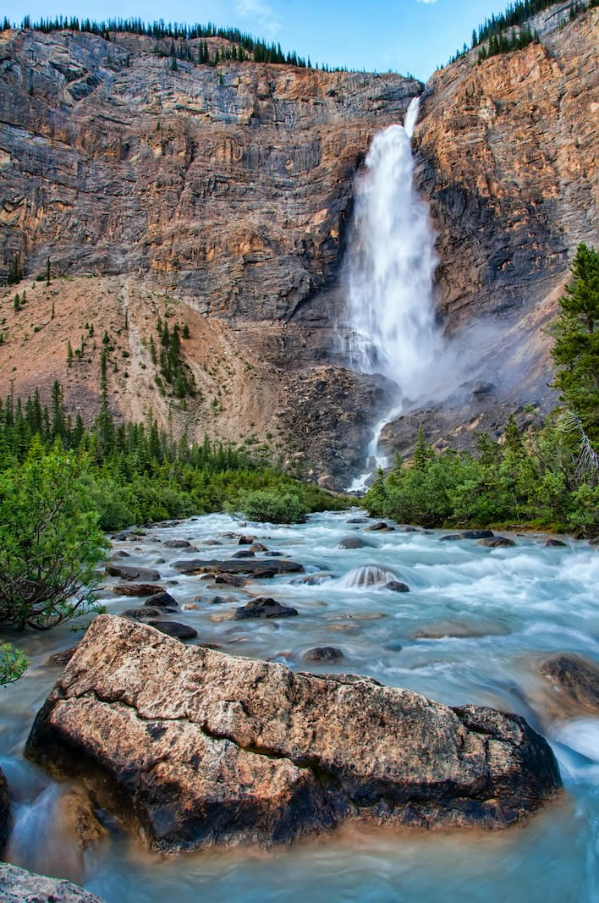
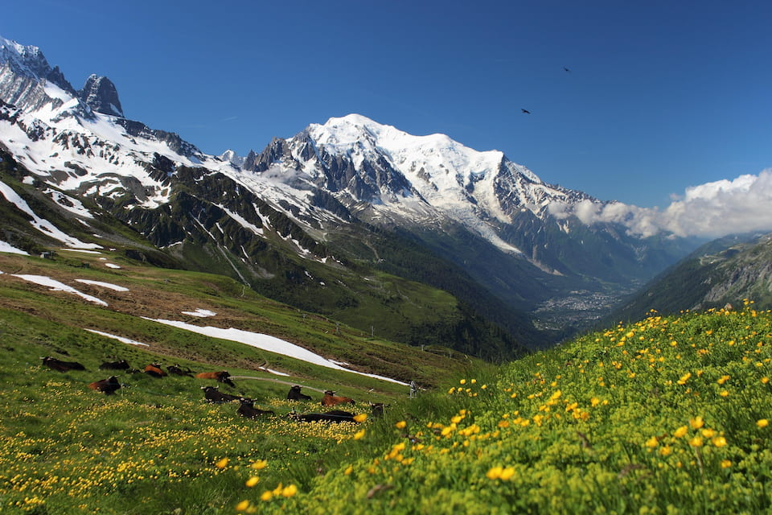
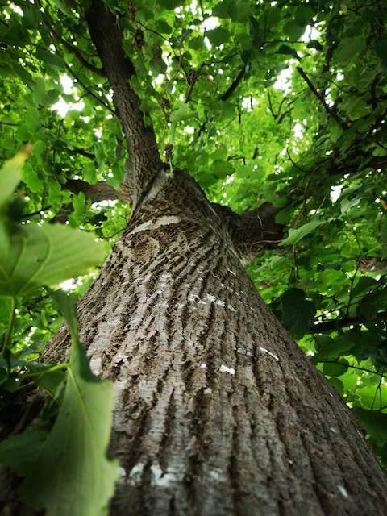

Photos can't show the air. Eighteen days at altitude reset something I didn't know was off.

05 / The world through our boots.
Photographs · Captioned · Geo-tagged
01 / Eighteen frames, six countries.
Taken by guides and guests on-route. No staged shots, no stock library, no AI. Each frame is captioned with location, photographer, and approximate elevation.









02 / What hikers wrote home.
Selected from the alumni dispatch archive.
The fire at base camp on night four. Quechua songs I didn't understand and didn't need to.
The Berber family who hosted us asked about my mother. I went home and called her. Best trip.